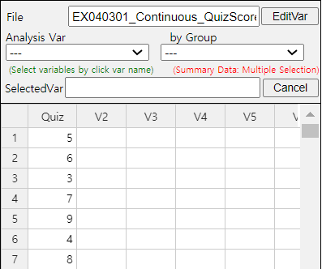

Chapter 4. Data Summary Using Tables and Measures
4.3 Summary Measures for Quantitative Variable
[presentation] [video]
4.3.1 Measures of Central Tendency
A mean or average is the sum of all data values divided by the number of data. If data \(x_1 ,x_2 ,\cdots, x_N\) are from a population, the mean of this data is referred to as a population mean and is usually denoted as \(\mu\) in Greek letter. The calculation formula can be defined as follows. $$ \small \mu = \frac{1}{N} \sum_{i=1}^N x_i $$ If data \(x_1 ,x_2 ,\cdots,x_n\) are sampled from a population, the mean of this data is referred as a sample mean and denoted as \(\overline x\) (read as 'x bar'). then the mean \(\overline x\) is defined as follows. $$ \small \overline x = \frac{1}{n} \sum_{i=1}^n x_i $$ Note that both the population mean and sample mean have the same formula except notation. Also, note that the mean is heavily influenced by an extreme point where one data value is either very large or very small.
The sample mean can be understood as the center of gravity representing sample data. Therefore, the sum of deviations which subtract the sample mean from each of the sample data is zero as follows. $$ \small \sum_{i=1}^n (x_i - \overline x ) = 0 $$
The sample mean has many good characteristics (Chapter 6) and is frequently used to estimate the population mean.
A median is the value placed in the middle when data are listed in ascending order of their values and is denoted as \(M\) if data are from a population or \(m\) if data are sampled from a population. If the number of sample data, \(n\), is an odd number, the median is the data value located at the \({\left( n+1 \above 1pt 2 \right)}^\text{th}\) when data are arranged in ascending order. If \(n\) is an even number, then the median is the average of the data values located at the \({\left( n \above 1pt 2 \right)}^\text{th}\) and \({\left( n+2 \above 1pt 2 \right)}^\text{th}\).
$$ \begin{align} m &= \left( \frac{n+1}{2}\right)^\text{th} \text{ data } & \text{if $n$ is odd}\\ &= \frac{ (\frac{n}{2})^\text{th} + \left(\frac{n+2}{2} \right)^\text{th} \text{ data }}{2} & \text{if $n$ is even} \end{align} $$
The median is not sensitive even if there is an extreme point in data, so it is often used as a measure of the central tendency when there is an extreme point.
A mode is the most frequently occurred value among data values. $$ \small \textit{Mode} = \text{the most frequently occurred value among data values} $$ In case of the quantitative data, since there might be so many possible values, it is not reasonable to set a mode value as the most frequently occurred data value. In this case, we usually transform the quantitative data into the qualitative data by dividing the data values into several not-overlapped intervals and count frequencies of each interval. The middle value of an interval which has the highest frequency is set to the mode.
Mean or average is the sum of all observed data divided by the number of data. The mean can be understood as the center of gravity representing data. The population mean is denoted as \(\mu\) and the sample mean is denoted as \(\overline x\).
Median is the value placed in the middle when data are listed in ascending order of their values. The population median is usually denoted as \(M\) and the sample median is denoted as \(m\).
Mode is the most frequently occurred value among data values.
Quiz scores of seven students in a class of Statistics are sampled randomly as follows.
Calculate the mean and median of this data and compare the result with 『eStat』 output.
Answer
The sample mean is calculated as follows.
\( \qquad \small \overline x ~=~ { {5 + 6 + 3 + 7 + 9 + 4 + 8} \over 7} ~=~ 6 \)
In order to find the sample median, first arrange the data in ascending order of data values as follows:
Since the sample size, 7, is an odd number, median is \(\small {\left( 7+1 \over 2 \right)}^{th} ~=~4^{th}\) data in the arranged data as above which is 6.
|
In order to use 『eStat』 , enter the data in column V1 of the sheet as in <Figure 4.3.1>. Click the Dot Graph icon and click the variable name ‘Quiz’ to see the dot graph of data as in <Figure 4.3.2>. If you check the option ‘Mean/StdDev’, you can see the location of mean and the length of standard deviation.
 <Figure 4.3.1> Data input
|

If you click the Descriptive Statistics icon , then a table of all descriptive statistics will result in the Log Area as shown in <Figure 4.3.3>. It shows not only mean and median, but also other statistics such as the standard deviation, minimum, and maximum etc.

You can also use 『eStatU』 to calculate the descriptive statistics and simulate an influence of extreme point. Select ‘Dot Graph – Box Plot – Descriptive Statistics’ from the menu of 『eStatU』 and enter data as in <Figure 4.3.4>. 『eStatU』 calculates all statistics while you are entering data.
If you click the [Execute] button, two sets of dot graph and box plot appear as in <Figure 4.3.5>. The first graph is for the data you entered and the second one is for simulation. On the second bar graph of <Figure 4.3.5>. you can click a point (circle) using your mouse and move to other far side location of axis (make an extreme point) to check its influence on mean and median. You can see that the mean is changed a lot by the extreme point, but the median is not changed by the extreme point.
|
Practice 4.3.1 (Otter Length) The lengths of 30 otters are measured (in cm) and the data are saved at the following location of 『eStat』.
[Ex] ⇨ eBook ⇨ PR040301_Continuous_OtterLength.csv
1) Use 『eStat』 to obtain the mean, median, minimum and maximum of this data.
2) Copy this data to 『eStatU』 and draw a dot graph and a box plot. Simulate the influence of an outlier.
|
If a frequency table of visitors’ age in a library is as shown in Table 4.3.1, find the mode of the age based on this frequency table.
| Age Interval | Frequency |
|---|---|
| [20.00, 30.00) | 2 ( 6.7%) |
| [30.00, 40.00) | 7 (23.3%) |
| [40.00, 50.00) | 7 (23.3%) |
| [50.00, 60.00) | 9 (30.0%) |
| [60.00, 70.00) | 3 (10.0%) |
| [70.00, 80.00) | 2 ( 6.7%) |
| Total | 30 (100%) |
Answer
The interval [50.00, 60.00) has the highest frequency which is 9 and median is the mid value of the interval [50.00, 60.00) is 55.
Another variant is a weighted mean in which each measurement is multiplied by a constant weight to obtain the mean. The grade point average for college students which uses the weights of credit hours is an example of the weighted mean. The price index which uses the weights of the total amount of sales of the goods is another example of the weighted mean. If \( x_{1} ,x_{2}, \dots , x_{n} \) are the data values and their weights are \( w_{1} , w_{2} ,\dots , w_{n} \), then the weighted mean is defined as the following. \[ \text{Weighted Mean} ~=~ { {w_{1} x_{1} +w_{2} x_{2} + \cdots + w_{n} x_{n}} \over {w_{1} + w_{2} + \cdots + w_{n}} } ~=~ { {\sum _{i=1} ^{n} w_{i} x_{i}} \over {\sum _{i=1} ^{n} w_{i}} } \]
Trimmed mean is the average of data except for a constant number of large and small values respectively in order to eliminate extremes.
Weighted mean is the average of weighted sum in which each measurement is multiplied by some weight and divided by the sum of all weights.
An Olympic Gymnastics Game was judged by eight referees and their result are as follows:
Find the mean and median of this data. Also, find the trimmed mean which excludes the minimum and the maximum. Compare both results.
Answer
This data is not a sample but a population of eight. The mean is as follows.
\( \qquad \small \mu ~=~ (9.0 + 9.5 + 9.3 + 7.2 + 10.0 + 9.1 + 9.4 + 9.0) / 8 ~=~ 72.5 / 8 ~=~ 9.063 \)
Since the number of data is \( \small N\) = 8 which is an even number, the median is the average of the 4th and the 5th data in the ordered list as follows:
Therefore, the median is the average of 9.1 and 9.3 which is 9.2.
The trimmed mean is the average of the remaining numbers, except the minimum of 7.2 and the maximum of 10.0.
\( \qquad \small \text{Trimmed Mean} ~=~ (9.0 + 9.0 + 9.1 + 9.3 + 9.4 + 9.5) / 6 ~=~ 55.3 / 6 ~=~ 9.217\)
In this data, the median or the trimmed mean is more representative of the data than the arithmetic mean.
A student took three courses in History (two credits), Math (four credits), and English (three credits) in last semester, and got A in History, B in math and C in English. Calculate the mean and the weighted mean with the number of credits if A is rated 4 points, B is 3 points, and C is 2 points.
Answer
\( \small \qquad \text{Mean = } \frac{4 + 3 + 2 }{3} = 3 \)
\( \small \qquad \text{Weighted Mean = } \frac { 2×4 + 4×3 + 3×2 } { 2 + 4 + 3 } = \frac{ 8 + 12 + 6} {9} = 2.89 \)
Weighted mean is less than mean, because although the grade of History which has two credits was A, the grade of English which has three credits was relatively poor C.
Multiple Choice Exercise
*** Choose one answer and click [Submit] button
4.1 Which of the following data is an average of 28, a median of 30, and a maximum of 40?
4.2 Six statistical scores are 70, 60, 80, 90, 90, 70. What is the median value of these scores?
4.3 There are cards that write each and every one of them as Numbers 1, 2, 3, ... \(n\). What is the average of these numbers?
4.4 I bought 10 tomatoes which cost 1 dollar each and 10 tomatoes which cost 2 dollars each. How much is its cost in average for each?
4.5 If the averages of two data sets are and their data sizes are , what is the average of the total data combined?
4.6 If data are \(x_1 , x_2 , ... , x_n \) and its mean is \(\overline x\), what is the value of \( \sum_{i=1}^{n} {x_i - \overline x}\) ?
4.7 Which of the following properties of the mean is incorrect?
4.8 The following table is the evaluation scores of a university student. What is the weighted average of the scores using the credits as weights?
| Course Name | A | B | C | D | E | F |
| Credit | 4 | 3 | 3 | 2 | 2 | 1 |
| Score | 80 | 90 | 85 | 95 | 75 | 90 |